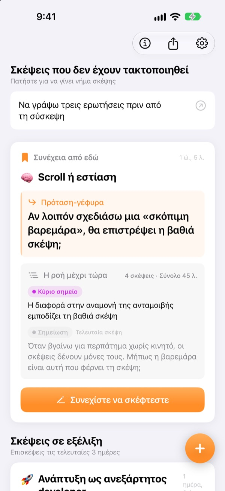
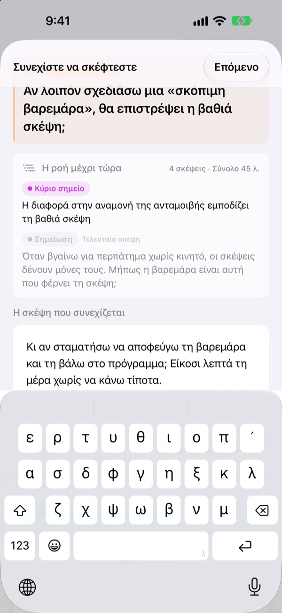
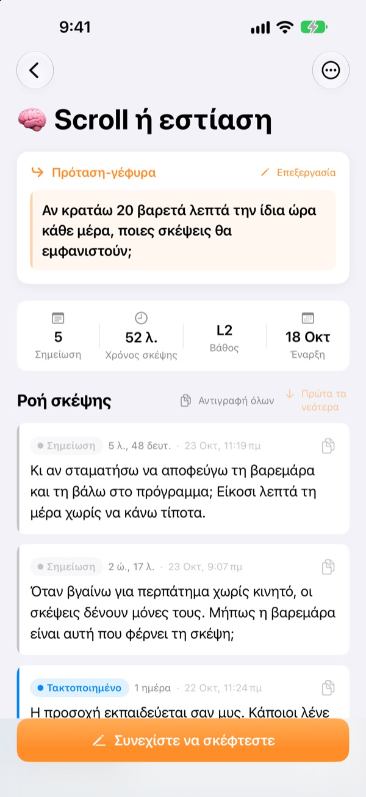
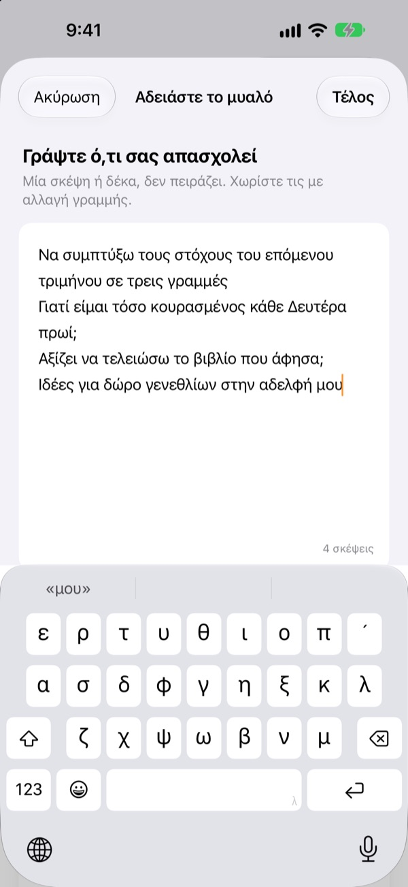

Η χθεσινή μισοτελειωμένη σκέψη
συνεχίζει σήμερα από το ίδιο σημείο
Όταν σταματάτε να σκέφτεστε, αφήστε μία γραμμή για να συνεχίσετε. Την επόμενη φορά που θα ανοίξετε την εφαρμογή, θα σας περιμένει στην κορυφή.
Όλες οι λειτουργίες είναι δωρεάν. Χωρίς λογαριασμό, όλα μένουν στη συσκευή σας.

Δοκιμάστε μια πρόταση-γέφυρα
Γράψτε μια σκέψη και αφήστε την πρόταση από την οποία θα συνεχίσετε. Τα βήματα είναι τα ίδια με την εφαρμογή.
Πού είχα μείνει;
Ανοίγετε μια σημείωση της περασμένης εβδομάδας και βρίσκετε μερικά συμπεράσματα, όχι όμως την ερώτηση που σκοπεύατε να ψάξετε μετά. Κι έτσι ξεκινάτε από το μηδέν. Το ThinkFlow σάς βάζει να σημειώσετε αυτή την επόμενη ερώτηση όταν σταματάτε, ώστε να ξεκινάτε από εκεί μόλις επιστρέψετε.
Η πρόταση-γέφυρα περιμένει στην κορυφή
Κλείστε τη σκέψη με μία γραμμή: την ερώτηση από την οποία θα συνεχίσετε. Όταν επιστρέψετε, αυτή η πρόταση, τα κύρια σημεία μέχρι τώρα και η τελευταία σκέψη βρίσκονται σε μία κάρτα. Δεν χρειάζεται να ξαναθυμηθείτε τίποτα.
Τη βλέπετε και σε γραφικό στοιχείο της Αρχικής οθόνης, και όσο σκέφτεστε ο χρόνος τρέχει στην οθόνη κλειδώματος και στο Dynamic Island.

Από τη σημείωση στο κύριο σημείο
Ανεβάστε κάθε σκέψη σε τέσσερα επίπεδα: σημείωση, τακτοποιημένο, κύριο σημείο και περίληψη. Βλέπετε με μια ματιά πόσο έχει ωριμάσει.
Ό,τι αναζητήσατε ή ρωτήσατε επισυνάπτεται ως υλικό, χωριστά από τις δικές σας σκέψεις.

Πρώτα αδειάστε το μυαλό
Γράψτε ό,τι σας γυρίζει στο μυαλό, μία γραμμή για κάθε σκέψη, και διαλέξτε αυτή που θέλετε να δουλέψετε τώρα. Γίνεται νήμα σκέψης, ενώ τα υπόλοιπα περιμένουν στην αρχική οθόνη μέχρι να τα πατήσετε.
Οι σκέψεις που δεν έχετε αγγίξει πάνω από τρεις ημέρες μαζεύονται στις Σκέψεις για αναβίωση.

Ξεκινήστε σε τρία βήματα
- 1
Αδειάστε το μυαλό
Μία γραμμή για κάθε σκέψη, μετά διαλέξτε αυτή που αξίζει να μεγαλώσει.
- 2
Συνεχίστε τη σκέψη
Προσθέστε κάθε νέα ιδέα χωριστά, για να τη δουλέψετε εύκολα μετά.
- 3
Αφήστε την πρόταση και κλείστε
Την επόμενη φορά ξεκινάτε από εκεί.
Επίπεδο επεξεργασίας
- Σημείωση
- Ωμή σκέψη
- Τακτοποιημένο
- Τακτοποιήθηκε μία φορά
- Κύριο σημείο
- Μόνο τα βασικά
- Περίληψη
- Τελική περίληψη
Πατήστε την ετικέτα επιπέδου δίπλα σε μια σκέψη για να το αλλάξετε. Τα κύρια σημεία και οι περιλήψεις εμφανίζονται πρώτα στην κάρτα όταν επιστρέφετε.
Η πρόταση-γέφυρα περιμένει στην κορυφή
Πρέπει οπωσδήποτε να γράψω πρόταση-γέφυρα;
Αν προσθέσατε κάτι, ναι: η οθόνη Συνεχίστε να σκέφτεστε κλείνει μόνο όταν αφήσετε την επόμενη γραμμή. Αν δεν γράψατε τίποτα, απλώς κλείστε την. Το μυστικό είναι να σταματάτε όσο έχετε ακόμη κάτι να πείτε, όχι όταν κολλήσετε.
Τι είναι οι Σκέψεις για αναβίωση;
Τα νήματα που δεν έχετε ανοίξει πάνω από τρεις ημέρες συγκεντρώνονται χωριστά στην αρχική οθόνη, ώστε μια σχεδόν ξεχασμένη σκέψη να συνεχίσει από την πρόταση-γέφυρά της.
Πώς αναφέρω ένα σφάλμα ή προτείνω κάτι;
Χρησιμοποιήστε την Αποστολή σχολίων στις ρυθμίσεις της εφαρμογής, γράψτε στη διεύθυνση παρακάτω ή ανοίξτε ένα issue στο github.com/M1zz/ThinkFlow/issues. Κάθε μήνυμα είναι ευπρόσδεκτο.
Είναι πραγματικά όλα δωρεάν;
Ναι. Όλες οι λειτουργίες είναι δωρεάν, χωρίς διαφημίσεις και χωρίς λογαριασμό. Το «Στήριξε τον δημιουργό» στις ρυθμίσεις είναι εντελώς προαιρετικό και δεν ξεκλειδώνει τίποτα.
Ερωτήσεις ή σχόλια; Γράψτε στο leeo@kakao.com.